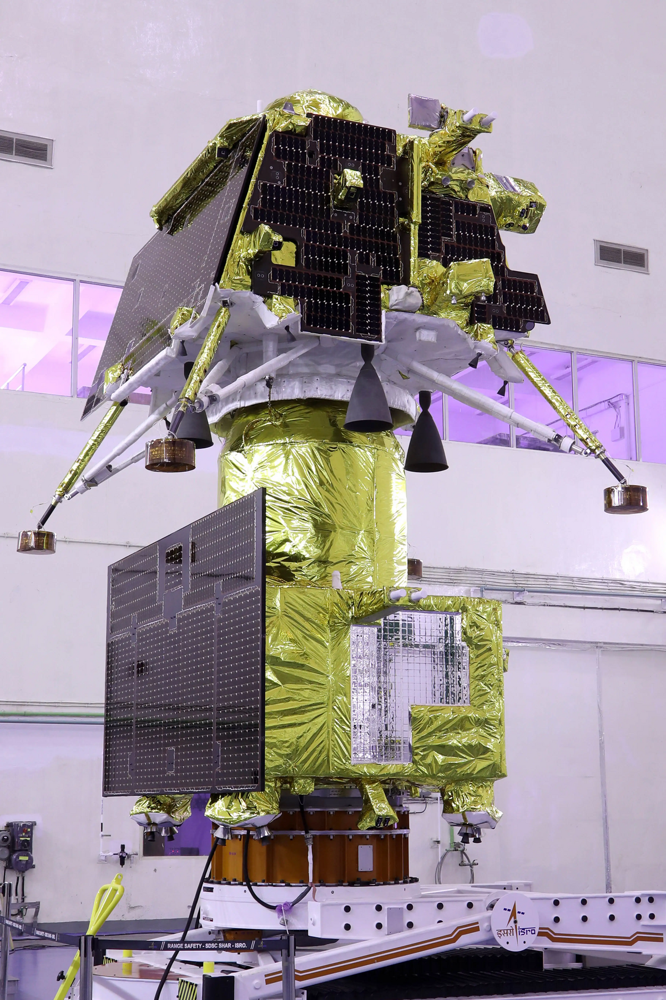
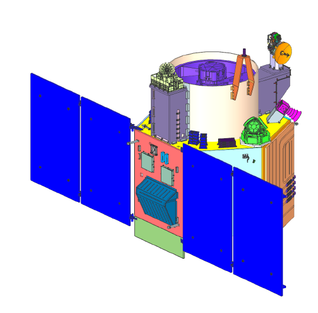

Indian Satellites
List of Indian Satellites
Aryabhata was India's first satellite,named after the astronomer. It was launched on 19 April 1975 from Kapustin Yar, a Soviet rocket launch and development site in Astrakhan Oblast using a Kosmos-3M launch vehicle. It was built by ISRO, and launched by the Soviet Union as a part of the Soviet Interkosmos programme which provided access to space for friendly states
The GSAT (Geosynchronous Satellite)[1] satellites are India's indigenously developed communications satellites, used for digital audio, data and video broadcasting. As of 5 December 2018, 20 GSAT satellites manufactured by ISRO have been launched, out of which 14 are in service.
 Chandrayaan-3 is the third mission in the Chandrayaan programme, a series of lunar-exploration missions developed by the Indian Space Research Organisation (ISRO). The mission consists of a Vikram lunar lander and a Pragyan lunar rover was launched from Satish Dhawan Space Centre on 14 July 2023. The spacecraft entered lunar orbit on 5 August, and India became the first country to touch down near the lunar south pole, at 69°S, the southernmost lunar landing on 23 August 2023 at 18:04 IST (12:33 UTC), ISRO became the first agency to land near the south pole of the moon in its first attempt and overall the fourth space agency to successfully land on the Moon, after USSR, NASA and the CNSA.
 Cartosat-3 is an advanced Indian Earth observation satellite built and developed by Indian Space Research Organisation (ISRO), which replaces the Indian Remote Sensing Satellite (IRS) series. It has a panchromatic resolution of 0.25 metres making it one of the imaging satellite with highest resolution in the world at the time of launch and MX of 1 metre with a high quality resolution which is a major improvement from the previous payloads in the Cartosat series